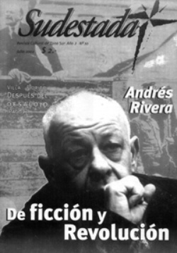

Buscar
Andrés Rivera: "No puedo hacer otra cosa que escribir libros"
Contra las advertencias del propio escritor, la entrevista con Andrés Rivera transitó caminos conocidos, los de siempre para un hombre que eligió, desde hace mucho tiempo, escribir la historia de los derrotados.
Edición N° 10
Julio 2002
Revista bimensual
Comprar edición impresaSumario
- Andrés Rivera: "No puedo hacer otra cosa que escribir libros"
- De citronaves y boxitracios
- Barrio Soledad, en Villa Fiorito: Después del desalojo
Compartir Articulo
"En esas desveladas noches de las que te hablo, pienso, también, en el intransferible y perpetuo aprendizaje de los revolucionarios: perder, resistir. Perder, resistir. Y resistir. Y no confundir lo real con la verdad". Andrés Rivera, La revolución es un sueño eterno
Suelen repetirse con frecuencia ciertas palabras. Ideas recurrentes que surgen, casi sin esfuerzo, en charlas como la que tuvimos con el escritor Andrés Rivera. Pero en el caso del autor de El farmer, las palabras que aparecen en el diálogo cuentan tras de sí con una historia, con un pasado que las alimenta y las trastoca, que las convierte en nociones que se hace cada vez más necesario comenzar a entender. Una de esas palabras cuenta con una fuerza fonética única, habla de luchas, de sangre, de esfuerzo, de violencia. Es Revolución. La otra suena algo apagada, habla de silencio, de retrocesos, de muertos.
Es Derrota. Una y otra se leen (o se intuyen) en cada uno de los textos de ficción de Rivera. Una y otra aparecen en cada instante en esta extensa entrevista con Sudestada.
Pero también las adivinamos en cada silencio, en cada gesto. "Paciencia e ironía son virtudes de los revolucionarios", cita Rivera a Lenin. Después, claro, tiene cosas para decir ("Acá, los que se dicen revolucionarios no son ni pacientes y, definitivamente, carecen de humor", afirma, desbordante de ironía).
Pero la voz de Rivera no se escucha simplemente desde el refugio de su inasible talento, de su estilo único, el que lo diferencia del resto en la literatura argentina. La voz de Rivera vale y se hace oír por su historia militante, por su pasado como obrero textil, por su trabajo en un humilde barrio cordobés desde hace mucho tiempo. A veces, escuchar algunas verdades nos incomoda porque nos exige cambiar, romper. Algo de esto nos espera unas líneas más abajo...
¿La ficción que usted desarrolla es una forma de darle a la historia una lectura diferente?
En primer lugar, yo no soy un novelista histórico. Soy apenas un aprendiz de novelista. En segundo lugar, aquellas que mal llaman novelas históricas (La revolución es un sueño eterno y El farmer, que tienen como protagonistas a Juan José Castelli y a Juan Manuel de Rosas, respectivamente), son novelas. Tienen a esos dos personajes de la historia argentina a los que yo intenté poner en un escenario que le resultara verosímil al lector de estos días y de los que vienen. Yo no hago interpretaciones de la historia, yo escribo ficción.
¿Por qué eligió ponerse en la piel de Castelli?
Le cuento como nació La revolución... De Castelli, los argentinos sabemos lo que dicen los manuales de historia: vocal de la Primera Junta, enviado en el ejército que marchó al Alto Perú, punto. De Rosas, se sabe mucho más porque sigue siendo un personaje central de la política argentina. El impulso interior para escribir La revolución... surgió cuando supe que el hombre a quien se llamó "el orador de la Revolución de Mayo" murió de un cáncer en la lengua. Me pareció una paradoja atroz, y allí nació la novela. Revisé 22 libros de historia, no me aportaron absolutamente nada. De modo que todo lo que aparece allí, salvo alguna proclama que después mezclé y cambié, es pura ficción. ¿Qué puedo decir de Rosas? No siento por él ninguna simpatía (como la tenía por Castelli) ni política, ni ideológica, ni humana. Pero tengo algunos puntos de contacto con Rosas. Cuando me lancé a escribir El farmer yo ya era un viejo, como Rosas.
Rosas vivía en el exilio, yo también, en este país. Rosas estaba solo, y yo también. Entonces lo hice hablar, y lo hice hablar en primera persona, siguiendo una recomendación de Cesare Pavese. Nadie podía pensar que Rosas se iba a golpear el pecho hablando en primera persona, ni que yo iba a escribir un panfleto antirosista con Rosas hablando en primera persona. ¿Por qué Rosas? Porque me volví católico. Si Castelli era la representación católica del Bien, Rosas -del otro lado de la mesa- era la representación del Mal. Poniendo en juego la salvaguardia de que Rosas habla de sí mismo y se justifica y afirma: "Quien gobierne podrá contar, siempre, con la cobardía incondicional de los argentinos". Creo que con esa frase tenía el libro escrito antes de escribirlo. (...)
(La nota completa en la edición gráfica de Sudestada N°10)
Comentarios
Diego Lanese, Hugo Montero, Ignacio Portela
Articulos más vistos


LIBRERÍA SUDESTADA

Colección infantil

Distribuidora de Libros

Suscripción

Sudestada en URUGUAY